| s/no | test_name | Duration | status |
|---|---|---|---|
| 1 | THROUGHPUT TEST [Parallel 5] | 1 mins | EXECUTED |
| 2 | FTP TEST [Parallel 3] | 1 mins | EXECUTED |
| 3 | HTTP TEST [Parallel 4] | 1 mins | EXECUTED |
| 4 | QoS TEST [Parallel 2] | 1 mins | EXECUTED |
| Test Setup Information |
|
||||||||||||||||||||
| Wireless Client | MAC | Channel | SSID | Mode | Packets Sent | Packets Received | Packets Loss |
|---|---|---|---|---|---|---|---|
| DESKTOP-IUQFRCV Windows | 24:ee:9a:39:2e:61 | 0 | AUTO 20 | 54 | 37 | 17 | |
| DESKTOP-F0HLI17 Windows | 00:bb:60:0b:5a:fe | 36 | OpenWifi_psk2 | 802.11abgn-AC 20 1x1 | 54 | 36 | 18 |
| DESKTOP-3KOIAJR Windows | f4:8c:50:e2:01:67 | 36 | OpenWifi_psk2 | 802.11abgn-AC 20 1x1 | 55 | 38 | 17 |
| moto_C4_R3 Android | ee:28:e8:db:54:9e | 36 | OpenWifi_psk2 | 802.11abgn-AC 80 | 11 | 11 | 0 |
| Wireless Client | MAC | Channel | SSID | Mode | Min Latency (ms) | Average Latency (ms) | Max Latency (ms) |
|---|---|---|---|---|---|---|---|
| DESKTOP-IUQFRCV Windows | 24:ee:9a:39:2e:61 | 0 | AUTO 20 | 11.00 | 50.189 | 134.0 | |
| DESKTOP-F0HLI17 Windows | 00:bb:60:0b:5a:fe | 36 | OpenWifi_psk2 | 802.11abgn-AC 20 1x1 | 10.00 | 23.377 | 41.0 |
| DESKTOP-3KOIAJR Windows | f4:8c:50:e2:01:67 | 36 | OpenWifi_psk2 | 802.11abgn-AC 20 1x1 | 9.00 | 65.037 | 414.0 |
| moto_C4_R3 Android | ee:28:e8:db:54:9e | 36 | OpenWifi_psk2 | 802.11abgn-AC 80 | 9.23 | 390.956 | 3200.0 |
| Test Configuration |
|
||||||||||||||||||||||||||||||||||||||||
| No of Stations | Throughput for Load 10.0 Mbps-download |
|---|---|
| 4 | BK : 27.05, BE : 37.77, VI: 39.43, VO: 40.09 |
The below graph represents overall Download throughput for all connected stations running BK, BE, VO, VI traffic with different intended loads10.0 Mbps per tos
The below graph represents individual throughput for 4 clients running BK (WiFi) traffic. X- axis shows “Throughput in Mbps” and Y-axis shows “number of clients”.
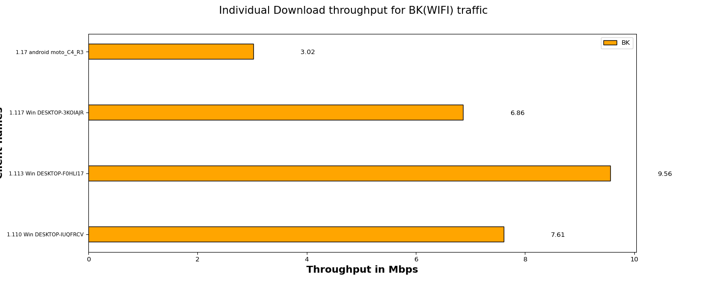
| Client Name | MAC | SSID | Type of traffic | Offered upload rate | Offered download rate | Observed average upload rate | Observed average download rate | Observed Upload Drop (%) | Observed Download Drop (%) |
|---|---|---|---|---|---|---|---|---|---|
| 1.110 Win DESKTOP-IUQFRCV | 24:ee:9a:39:2e:6 | Background | 0.0 Mbps | 10.0 Mbps | 0.0 Mbps | 7.91 Mbps | 0.0 | 35.84 | |
| 1.113 Win DESKTOP-F0HLI17 | 00:bb:60:0b:5a:fe | OpenWifi_psk2 | Background | 0.0 Mbps | 10.0 Mbps | 0.0 Mbps | 5.24 Mbps | 0.0 | 8.32 |
| 1.117 Win DESKTOP-3KOIAJR | f4:8c:50:e2:01:6 | OpenWifi_psk2 | Background | 0.0 Mbps | 10.0 Mbps | 0.0 Mbps | 7.57 Mbps | 0.0 | 23.14 |
| 1.17 android moto_C4_R3 | ee:28:e8:db:54:9e | OpenWifi_psk2 | Background | 0.0 Mbps | 10.0 Mbps | 0.0 Mbps | 1.73 Mbps | 0.0 | 49.51 |
The below graph represents individual throughput for 4 clients running BE (WiFi) traffic. X- axis shows “number of clients” and Y-axis shows “Throughput in Mbps”.
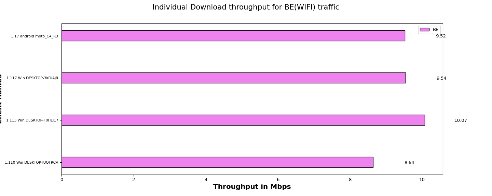
| Client Name | MAC | SSID | Type of traffic | Offered upload rate | Offered download rate | Observed average upload rate | Observed average download rate | Observed Upload Drop (%) | Observed Download Drop (%) |
|---|---|---|---|---|---|---|---|---|---|
| 1.110 Win DESKTOP-IUQFRCV | 24:ee:9a:39:2e:6 | Besteffort | 0.0 Mbps | 10.0 Mbps | 0.0 Mbps | 7.01 Mbps | 0.0 | 0.04 | |
| 1.113 Win DESKTOP-F0HLI17 | 00:bb:60:0b:5a:fe | OpenWifi_psk2 | Besteffort | 0.0 Mbps | 10.0 Mbps | 0.0 Mbps | 8.93 Mbps | 0.0 | 2.93 |
| 1.117 Win DESKTOP-3KOIAJR | f4:8c:50:e2:01:6 | OpenWifi_psk2 | Besteffort | 0.0 Mbps | 10.0 Mbps | 0.0 Mbps | 7.93 Mbps | 0.0 | 8.02 |
| 1.17 android moto_C4_R3 | ee:28:e8:db:54:9e | OpenWifi_psk2 | Besteffort | 0.0 Mbps | 10.0 Mbps | 0.0 Mbps | 6.18 Mbps | 0.0 | 19.69 |
The below graph represents individual throughput for 4 clients running VI (WiFi) traffic. X- axis shows “number of clients” and Y-axis shows “Throughput in Mbps”.
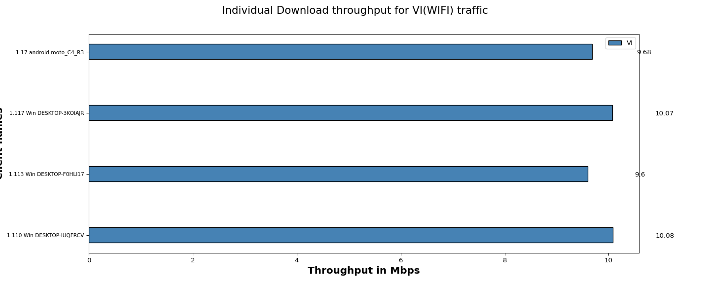
| Client Name | MAC | SSID | Type of traffic | Offered upload rate | Offered download rate | Observed average upload rate | Observed average download rate | Observed Upload Drop (%) | Observed Download Drop (%) |
|---|---|---|---|---|---|---|---|---|---|
| 1.110 Win DESKTOP-IUQFRCV | 24:ee:9a:39:2e:6 | Video | 0.0 Mbps | 10.0 Mbps | 0.0 Mbps | 8.85 Mbps | 0.0 | 0.00 | |
| 1.113 Win DESKTOP-F0HLI17 | 00:bb:60:0b:5a:fe | OpenWifi_psk2 | Video | 0.0 Mbps | 10.0 Mbps | 0.0 Mbps | 8.38 Mbps | 0.0 | 0.00 |
| 1.117 Win DESKTOP-3KOIAJR | f4:8c:50:e2:01:6 | OpenWifi_psk2 | Video | 0.0 Mbps | 10.0 Mbps | 0.0 Mbps | 7.97 Mbps | 0.0 | 0.00 |
| 1.17 android moto_C4_R3 | ee:28:e8:db:54:9e | OpenWifi_psk2 | Video | 0.0 Mbps | 10.0 Mbps | 0.0 Mbps | 7.56 Mbps | 0.0 | 0.23 |
The below graph represents individual throughput for 4 clients running VO (WiFi) traffic. X- axis shows “number of clients” and Y-axis shows “Throughput in Mbps”.
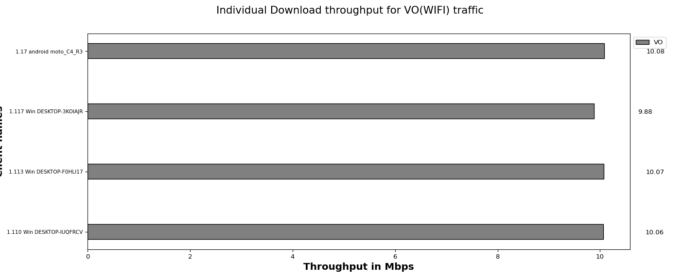
| Client Name | MAC | SSID | Type of traffic | Offered upload rate | Offered download rate | Observed average upload rate | Observed average download rate | Observed Upload Drop (%) | Observed Download Drop (%) |
|---|---|---|---|---|---|---|---|---|---|
| 1.110 Win DESKTOP-IUQFRCV | 24:ee:9a:39:2e:6 | Voice | 0.0 Mbps | 10.0 Mbps | 0.0 Mbps | 10.02 Mbps | 0.0 | 0.02 | |
| 1.113 Win DESKTOP-F0HLI17 | 00:bb:60:0b:5a:fe | OpenWifi_psk2 | Voice | 0.0 Mbps | 10.0 Mbps | 0.0 Mbps | 9.99 Mbps | 0.0 | 0.01 |
| 1.117 Win DESKTOP-3KOIAJR | f4:8c:50:e2:01:6 | OpenWifi_psk2 | Voice | 0.0 Mbps | 10.0 Mbps | 0.0 Mbps | 9.38 Mbps | 0.0 | 1.45 |
| 1.17 android moto_C4_R3 | ee:28:e8:db:54:9e | OpenWifi_psk2 | Voice | 0.0 Mbps | 10.0 Mbps | 0.0 Mbps | 8.85 Mbps | 0.0 | 0.59 |
| Information |
|
||||
| Test Setup Information |
|
||||||||||||||||||||||||||||||||||||||||
The below graph represents number of times a file Download for each client(WiFi) traffic. X- axis shows “No of times file Download” and Y-axis shows Client names.
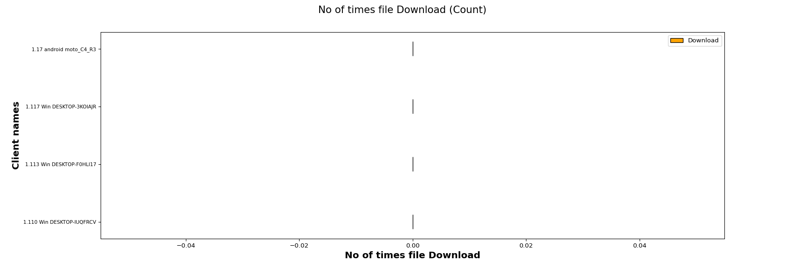
The below graph represents average time taken to Download for each client (WiFi) traffic. X- axis shows “Average time taken to Download a file ” and Y-axis shows Client names.
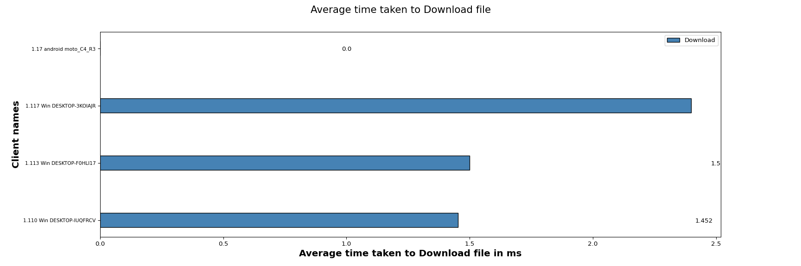
The below table will provide information of minimum, maximum and the average time taken by clients to download a file in seconds
| Minimum | Maximum | Average |
|---|---|---|
| 0.0 | 0.0 | 0.0 |
| Clients | MAC | Channel | SSID | Mode | No of times File downloaded | Time Taken to Download file (ms) | Bytes-rd (Mega Bytes) | RX RATE (Mbps) | Failed Urls |
|---|---|---|---|---|---|---|---|---|---|
| 1.110 Win DESKTOP-IUQFRCV | 24:ee:9a:39:2e:6 | 36 | OpenWifi_psk2 | 802.11abgn-AC 80 | 0 | 1.452 | 0.0 | 0.0 | 53 |
| 1.113 Win DESKTOP-F0HLI17 | 00:bb:60:0b:5a:fe | 0 | AUTO 20 | 0 | 1.500 | 0.0 | 0.0 | 54 | |
| 1.117 Win DESKTOP-3KOIAJR | f4:8c:50:e2:01:6 | 36 | OpenWifi_psk2 | 802.11abgn-AC 20 1x1 | 0 | 2.400 | 0.0 | 0.0 | 55 |
| 1.17 android moto_C4_R3 | ee:28:e8:db:54:9e | 36 | OpenWifi_psk2 | 802.11abgn-AC 20 1x1 | 0 | 0.000 | 0.0 | 0.0 | 0 |
| Test Setup Information |
|
||||||||||||||||||||||||||||||||||||||||
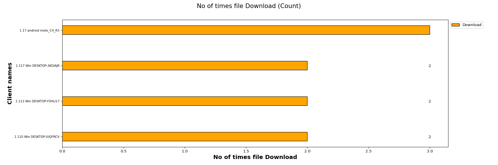
The below graph represents average time taken to download for each client . X- axis shows “Average time taken to download a file ” and Y-axis shows Client names.
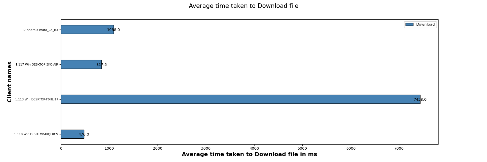
This Table will provide you information of the minimum, maximum and the average time taken by clients to download a webpage in seconds
| Minimum | Maximum | Average |
|---|---|---|
| 0.5 | 7.4 | 2.5 |
| Clients | MAC | Channel | SSID | Mode | No of times File downloaded | Average time taken to Download file (ms) | Bytes-rd (Mega Bytes) | Rx Rate (Mbps) | Failed url's |
|---|---|---|---|---|---|---|---|---|---|
| 1.110 Win DESKTOP-IUQFRCV | 24:ee:9a:39:2e:6 | 36 | OpenWifi_psk2 | 802.11abgn-AC 80 | 2 | 476.0 | 10.0876 | 3.2522 | 0 |
| 1.113 Win DESKTOP-F0HLI17 | 00:bb:60:0b:5a:fe | 0 | AUTO 20 | 2 | 7438.0 | 10.0602 | 3.4436 | 1 | |
| 1.117 Win DESKTOP-3KOIAJR | f4:8c:50:e2:01:6 | 36 | OpenWifi_psk2 | 802.11abgn-AC 20 1x1 | 2 | 837.5 | 10.0350 | 3.4185 | 0 |
| 1.17 android moto_C4_R3 | ee:28:e8:db:54:9e | 36 | OpenWifi_psk2 | 802.11abgn-AC 20 1x1 | 3 | 1088.0 | 17.4037 | 4.4697 | 0 |
The below tables provides the input parameters for the test
| Test Configuration |
|
||||||||||||||||||||||||||||||||||||||||||||
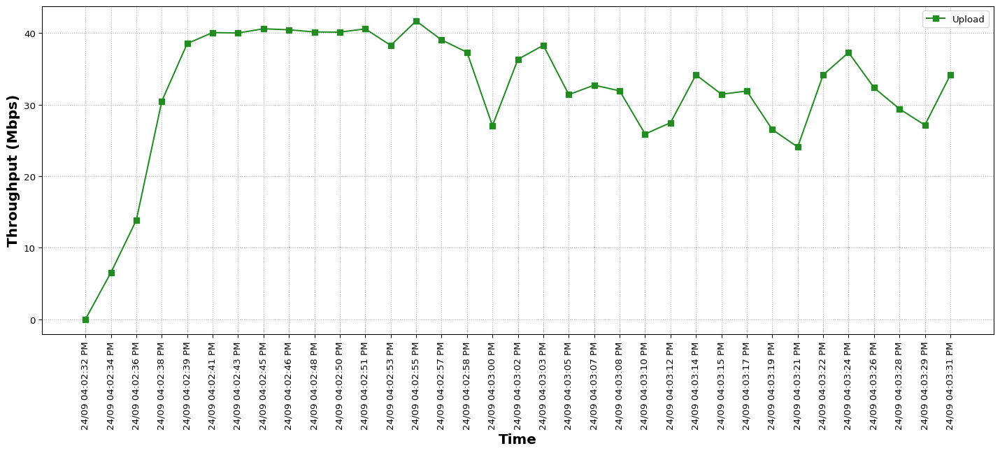
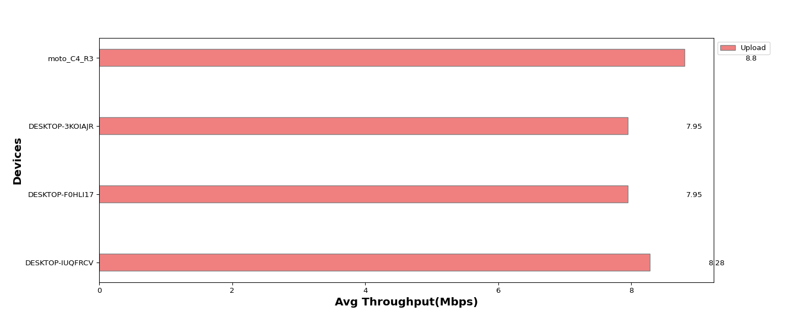
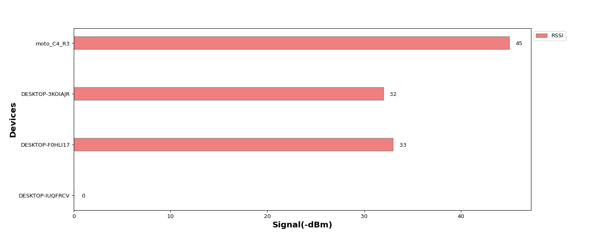
The below tables provides detailed information for the throughput test on each device.
| Device Type | Username | SSID | MAC | Channel | Mode | Offered download rate (Mbps) | Observed Average download rate (Mbps) | Offered upload rate (Mbps) | Observed Average upload rate (Mbps) | RSSI (dBm) | Average RTT (ms) | Packet Size(Bytes) | Average Tx Drop % | Average Rx Drop % |
|---|---|---|---|---|---|---|---|---|---|---|---|---|---|---|
| Windows | DESKTOP-IUQFRCV | 24:ee:9a:39:2e:6 | 0 | AUTO 20 | 0.0 | 0 | 10.0 | 8.28 | 720 | AUTO | 1.09 | 0.0 | ||
| Windows | DESKTOP-F0HLI17 | OpenWifi_psk2 | 00:bb:60:0b:5a:fe | 36 | 802.11abgn-AC 20 1x1 | 0.0 | 0 | 10.0 | 7.95 | -33 | 870 | AUTO | 6.64 | 0.0 |
| Windows | DESKTOP-3KOIAJR | OpenWifi_psk2 | f4:8c:50:e2:01:6 | 36 | 802.11abgn-AC 20 1x1 | 0.0 | 0 | 10.0 | 7.95 | -32 | 300 | AUTO | 3.03 | 0.0 |
| Android | moto_C4_R3 | OpenWifi_psk2 | ee:28:e8:db:54:9e | 36 | 802.11abgn-AC 80 | 0.0 | 0 | 10.0 | 8.8 | -45 | 521 | AUTO | 0.01 | 0.0 |